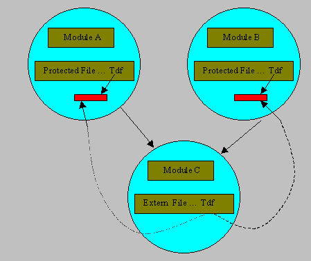

Extern peut précéder la déclaration
d'un fichier par HFile ou HTmpFile
d'un enregistrement par Record ou RecordDiva
Extern n'est pas utilisé dans le module principal (Main) mais dans des modules contenant des fonctions générales pouvant être appelées depuis plusieurs autres modules.
Diva n'alloue pas d'espace mémoire pour une donnée déclarée Extern. Au moment de l'appel d'une fonction/procédure du module, les données déclarées Extern pointent sur l'instance de la donnée (Public ou Protected) qui était utilisée dans le module appelant.
Remarque : Si au moment de l'appel, une donnée définie Extern n'a jamais été allouée par un module, la donnée est allouée en Public par le module appelé.
Exemple

Les modules A et B utilisent une fonction du module C qui utilise la donnée Tdf déclarée externe dans C. Les modules A et B ont chacun une instance distincte de Tdf puisqu'elle est déclarée Protected dans les deux modules.
Lors de l'appel de A vers C, la donnée Tdf du module C pointe sur la donnée Tdf du module A (c'est à dire que à ce moment il s'agit bien de la même donnée).
Lors de l'appel de B vers C, la donnée Tdf du module C pointe sur la donnée Tdf du module B. Si Tdf était Public dans le module B, le module C utiliserait également la même Tdf que celle du module B.
La donnée Tdf du module A ne peut jamais être vue par le module B ni par les modules appelés par B.
En résumé, les données externes d'un module pointent sur les données Protected ou Public du module appelant.
Exemple d'application
Soit un fichier de factures Ffac contenant deux types d'enregistrements :
des enregistrements d'entêtes,
des enregistrements détail.
Un module général contient les fonctions de base pour accéder à ce fichier.
; --------- Module Mgen des fonctions générales ---------
Extern HFile facdd ffac tdffac ; déclaration de la tdf en externe
...
Public Function int LectureEntete
beginf
...
st = Fread(tdffac,Entete)
...
endf
Public Function int LectureDetail
beginf
...
st = Fread(tdffac,Detail)
...
endf
Le module principal lit une entête de facture et appelle une fonction d'un autre module (Fperso) qui est modifiable lors de la verticalisation du produit.
; ---------- Programme Principal ----------
Module "Fperso.dhop"
Module "Mgen.dhop"
Protected HFile facdd ffac tdffac
...
Main
Loop …
st = LectureEntete
...
ApresLectureEntete
...
Endloop
Le module Fperso lit les lignes détail. Comme la tdf du programme principal est Protected, il ne risque pas de la "casser" et comme la tdf du module général est Extern il peut appeler les fonctions de ce module. Le module Mgen utilise donc soit la tdf du module principal, soit la tdf du module de personnalisation.
; ----------- Module Fperso ----------
Module "Mgen.dhop"
Public HFile facdd ffac tdffac
...
Public Procedure ApresLectureEntete
Beginp
...
st = LectureDetail
...
Endp
Voir